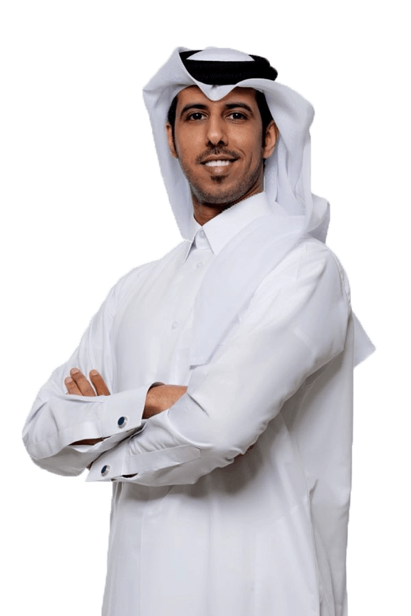

بورتفوليو شخصي · إعلام وريادة مجتمعية · الدوحة
فيصل الهاجري
إعلامي وصانع مبادرات شبابية من قطر، مهتم ببناء مشاريع ذات أثر مجتمعي، وتقديم محتوى بصري يربط بين الهوية المحلية والإبداع وفرص التطوير للشباب.
نبذة سريعة
ملخص سريع يعطي الزائر فكرة أوضح عن الشخصية والاهتمامات قبل الانتقال لباقي الأقسام.
تعريف بسيط
نموذج بصياغة حديثة لموقع شخصي عربي بطابع بصري هادئ واحترافي.
من هو فيصل؟
فيصل الهاجري شخصية قطرية شابة بدأت رحلتها من العمل التطوعي والمبادرات الإعلامية، ثم توسعت لتقديم محتوى ومشاركات في اللقاءات العامة حول دور الشباب والهوية المحلية وصناعة الأثر.
الرسالة
نقل قصص ملهمة من المجتمع القطري إلى جمهور أوسع، وبناء مساحة تجمع بين الأصالة والابتكار، مع التركيز على الجيل الجديد من صناع المحتوى والمبادرين.
التخصصات
هذا القسم مهم حتى يفهم الزائر بسرعة ما الذي يقدمه صاحب الموقع.
التحدث الإعلامي
المشاركة في البرامج والحوارات المتعلقة بالشباب والهوية والمبادرات المجتمعية.
إدارة المبادرات
تصميم مبادرات شبابية وربطها بفرص تعليمية وإعلامية تخلق أثرًا حقيقيًا ومستدامًا.
السرد البصري
تحويل الأفكار إلى قصص مرئية قابلة للنشر عبر المنصات الرقمية والفعاليات العامة.
الإنجازات
يمكنك لاحقًا استبدال هذه الأمثلة الوهمية بإنجازات أو مشاركات حقيقية.
2025
إطلاق مبادرة شبابية للتعبير الإعلامي
مبادرة تهدف إلى تدريب الشباب على مهارات الظهور الإعلامي وصناعة الرسائل المؤثرة عبر الفيديو القصير.
2024
تكريم في ملتقى المبادرات المجتمعية
تكريم تقديرًا للمساهمة في تمكين الشباب عبر مشاريع تطوعية تجمع بين الإبداع والخدمة العامة.
2023
مشاركة في حملات توعوية رقمية
قيادة حملات ركزت على الهوية المحلية والمسؤولية الرقمية وتحفيز المبادرة الفردية.
مقابلات فيديو
مقاطع تجريبية قابلة للاستبدال لاحقًا بروابط مقابلات أو لقاءات حقيقية.
لقاء حول الإبداع والمجتمع
حوار عن دور الشباب في صناعة الأثر
وسائل التواصل
روابط تجريبية يمكنك تعديلها مباشرة بحسب الحسابات الحقيقية.